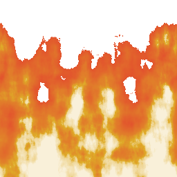

.... welcome to my website! :)

⚠ ⚠ Touch Down Interface Project || C && ARDUINO && WEBSOCKETS ⚠ ⚠
My largest project to date, I use a Teensy 4.1 micro controller (Arduino-ish) to manage the usage of a rack of buttons in order to communicate to a Black Magic router switching and change current sources for a given destination.
The Teensy also hosts a website and WebSocket server to display real time debug and config information, in this web interface one can create groups of buttons to be assinged to a single engineer.
⚠ ⚠ Mandlebrot Fractal Renderer Project || C++ && OpenGL ⚠ ⚠
My first full OpenGL project, teaching much about proper parallelisation and optimisation on a GPU.
Written from scratch in C++.
Samuel Burford
CV